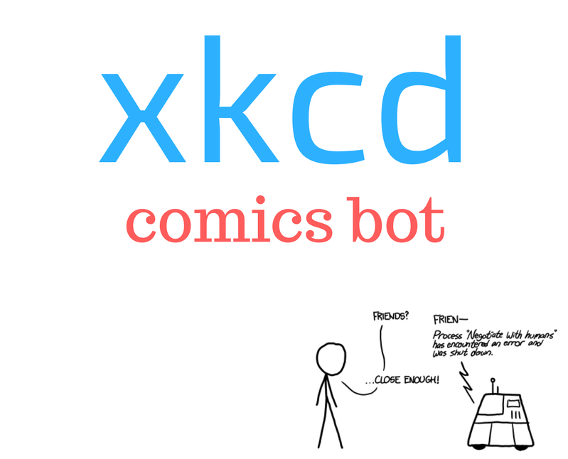
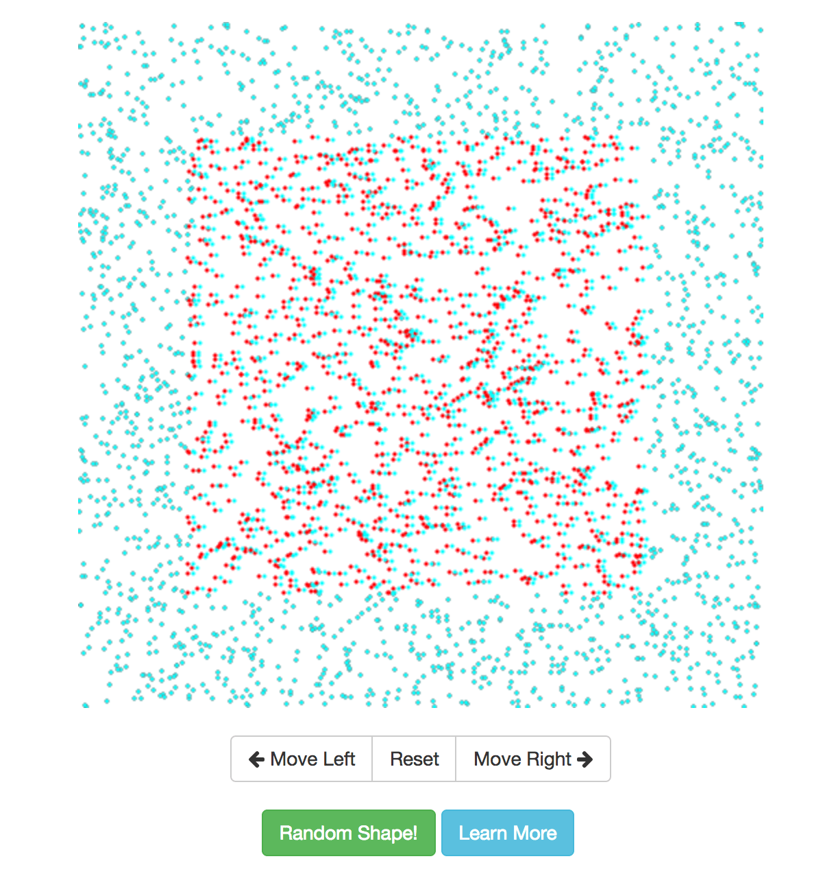

Featured Projects

XKCD Chat Bot
- Node.js, Facebook API, Heroku
A facebook chat-bot that lets you read xkcd webcomics directly on Facebook Messenger. I built it for fun using Node.js, Heroku, and Messenger API.
Check it outTetris AI with Monte Carlo Tree Search
- Gameplaying, AI, MCTS
An AI agent that can play the game of Tetris using Monte Carlo Tree Search. Final Project for CS221 (Artificial Intelligence: Principles and Techniques) at Stanford.
Final Paper

Random Dot Stereogram
- psychology, illusion, webapp
I built this web app to better visualize one of the concepts I learned in Psych 30 (Introduction to Perception) class at Stanford. It generates red-cyan stereograms which give an illusion of depth to the viewers.
Web App